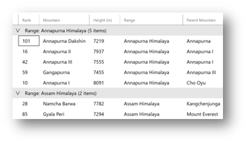
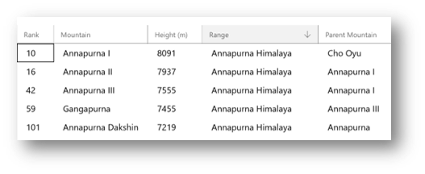

How to: Group, sort and filter data in the DataGrid Control (Archived)
Warning
This document has been archived and the component is not available in the current version of the Windows Community Toolkit.
While there are no immediate plans to port this component directly to 8.x, it's important to understand that:
- The WCT 7.x DataGrid is still usable alongside WCT 8.x components for existing projects.
- The DataGrid control has been deprecated in favor of the new DataTable component.
For new development, we recommend using the DataTable component which offers improved functionality and is actively maintained. If you have specific needs that DataTable doesn't meet, please consider contributing to WCT Labs where component improvements are prototyped and incubated.
For more information:
- DataGrid (Archived) concept docs
- DataGrid discussion in Labs
- Community Toolkit GitHub repository
- Documentation feedback and suggestions
Original documentation follows below.
It is often useful to view data in a DataGrid in different ways by grouping, sorting, and filtering the data. To group, sort, and filter the data in a DataGrid, you bind it to a CollectionViewSource. You can then manipulate the data in the backing data source using LINQ queries without affecting the underlying data. The changes in the collection view are reflected in the DataGrid user interface (UI).
The following walk-throughs demonstrate how to implement grouping, sorting and filtering for the DataGrid control through examples.
See DataGrid Sample for the complete sample code and running app.
1. Grouping
The DataGrid control has built-in row group header visuals for one-level grouping. You can set the DataGrid.ItemsSource to a grouped collection through CollectionViewSource with IsSourceGrouped property set to True and the DataGrid will automatically show the contents grouped under row group headers based on the data source.
The following walk-through shows how to implement and customize grouping in the DataGrid control.
Add the DataGrid control to your XAML page
<controls:DataGrid x:Name="dg" Height="600" Margin="12" AutoGenerateColumns="True"> </controls:DataGrid>Create the grouped collection using LINQ
// Create grouping for collection ObservableCollection<GroupInfoCollection<Mountain>> mountains = new ObservableCollection<GroupInfoCollection<Mountain>>(); //Implement grouping through LINQ queries var query = from item in _items group item by item.Range into g select new { GroupName = g.Key, Items = g }; //Populate Mountains grouped collection with results of the query foreach (var g in query) { GroupInfoCollection<Mountain> info = new GroupInfoCollection<Mountain>(); info.Key = g.GroupName; foreach (var item in g.Items) { info.Add(item); } mountains.Add(info); }Populate a CollectionViewSource instance with the grouped collection and set IsSourceGrouped property to True.
//Create the CollectionViewSource and set to grouped collection CollectionViewSource groupedItems = new CollectionViewSource(); groupedItems.IsSourceGrouped = true; groupedItems.Source = mountains;Set the ItemsSource of the DataGrid control
//Set the datagrid's ItemsSource to grouped collection view source dg.ItemsSource = groupedItems.View;Customize the Group header values through RowGroupHeaderStyles, RowGroupHeaderPropertyNameAlternative properties and by handling the LoadingRowGroup event to alter the auto-generated values in code.
<controls:DataGrid x:Name="dg" Height="600" Margin="12" AutoGenerateColumns="True" LoadingRowGroup="dg_loadingRowGroup" RowGroupHeaderPropertyNameAlternative="Range"> <controls:DataGrid.RowGroupHeaderStyles> <!-- Override the default Style for groups headers --> <Style TargetType="controls:DataGridRowGroupHeader"> <Setter Property="Background" Value="LightGray" /> </Style> </controls:DataGrid.RowGroupHeaderStyles> </controls:DataGrid>//Handle the LoadingRowGroup event to alter the grouped header property value to be displayed private void dg_loadingRowGroup(object sender, DataGridRowGroupHeaderEventArgs e) { ICollectionViewGroup group = e.RowGroupHeader.CollectionViewGroup; Mountain item = group.GroupItems[0] as Mountain; e.RowGroupHeader.PropertyValue = item.Range; }

2. Sorting
Users can sort columns in the DataGrid control by tapping on the desired column headers. To implement sorting, the DataGrid control exposes the following mechanisms:
- You can indicate columns are sortable in 2 ways. CanUserSortColumns property on DataGrid can be set to True to indicate all columns in the DataGrid control are sortable by the end user. Alternatively, you can also set CanUserSort property on individual DataGridColumns to control which columns are sortable by the end user. The default values for both properties is True. If both properties are set, any value of False will take precedence over a value of True.
- You can indicate the sort direction of a column by setting DataGridColumn.SortDirection? property. The DataGridSortDirection enumeration allows the values of Ascending and Descending. The default value for SortDirection property is null (unsorted).
- If DataGridColumn.SortDirection property is set to Ascending, an ascending sort icon (upward facing arrow) will be shown to the right of the column header indicating that the specific column has been sorted in the ascending order. The reverse is true for Descending. When the value is null, no icon will be shown. Note: the DataGrid control does not automatically perform a sort when this property is set. The property is merely a tool for showing the correct built-in icon visual.
- If DataGrid.CanUserSortColumns and DataGridColumn.CanUserSort properties are both true, DataGrid.Sorting event will be fired when the end user taps on the column header. Sorting functionality can be implemented by handling this event.
- You can use the DataGridColumn.Tag property to keep track of the bound column header during sort.
The following walk-through shows how to implement sorting in the DataGrid control.
Add the DataGrid control to your XAML page. Set the appropriate sort properties and add a handler for Sorting event.
<controls:DataGrid x:Name="dg" Height="600" Margin="12" AutoGenerateColumns="False" CanUserSortColumns="True" Sorting="dg_Sorting"> <controls:DataGrid.Columns> <controls:DataGridTextColumn Header="Range" Binding="{Binding Range}" Tag="Range"/> <!-- Add more columns --> </controls:DataGrid.Columns> </controls:DataGrid>Handle the Sorting event to implement logic for sorting
private void dg_Sorting(object sender, DataGridColumnEventArgs e) { //Use the Tag property to pass the bound column name for the sorting implementation if (e.Column.Tag.ToString() == "Range") { //Use the Tag property to pass the bound column name for the sorting implementation if (e.Column.Tag.ToString() == "Range") { //Implement sort on the column "Range" using LINQ if (e.Column.SortDirection == null || e.Column.SortDirection == DataGridSortDirection.Descending) { dg.ItemsSource = new ObservableCollection<Mountain>(from item in _items orderby item.Range ascending select item); e.Column.SortDirection = DataGridSortDirection.Ascending; } else { dg.ItemsSource = new ObservableCollection<Mountain>(from item in _items orderby item.Range descending select item); e.Column.SortDirection = DataGridSortDirection.Descending; } } // add code to handle sorting by other columns as required // Remove sorting indicators from other columns foreach (var dgColumn in dg.Columns) { if (dgColumn.Tag.ToString() != e.Column.Tag.ToString()) { dgColumn.SortDirection = null; } } } }Set the SortDirection property to the appropriate value for showing the built-in ascending sort icon in column header
//Show the ascending icon when acending sort is done e.Column.SortDirection = DataGridSortDirection.Ascending; //Show the descending icon when descending sort is done e.Column.SortDirection = DataGridSortDirection.Descending; //Clear the SortDirection in a previously sorted column when a different column is sorted previousSortedColumn.SortDirection = null;

3. Filtering
The DataGrid control does not support any built-in filtering capabilities. The following walk-through shows how you can implement your own filtering visuals and apply it to the DataGrid's content.
Add the DataGrid control to your XAML page.
<controls:DataGrid x:Name="dg" Height="600" Margin="12" AutoGenerateColumns="True"/>Add buttons for filtering the DataGrid's content. It is recommended to use the CommandBar control with AppBarButtons to add filtering visuals at the top of your page. The following example shows a CommandBar with the title for the table and one filter button.
<CommandBar Background="White" Margin="12" IsOpen="True" IsSticky="True" DefaultLabelPosition="Right" Content="Mountains table"> <AppBarButton Icon="Filter" Label="Filter by Rank < 50" Click="rankLowFilter_Click"> </CommandBar>Handle the AppBarButton's Click event to implement the filtering logic.
private void rankLowFilter_Click(object sender, RoutedEventArgs e) { dg.ItemsSource = new ObservableCollection<Mountain>(from item in _items where item.Rank < 50 select item); }
Example app
For the complete example of all the capabilities in this section in a running application, see DataGrid Sample.